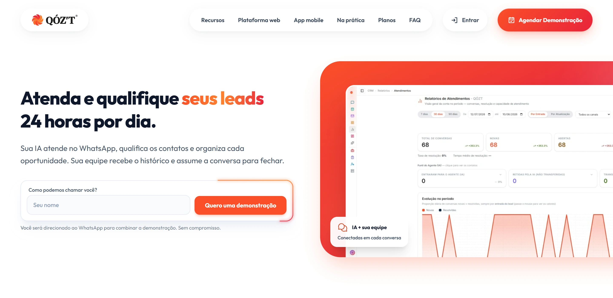
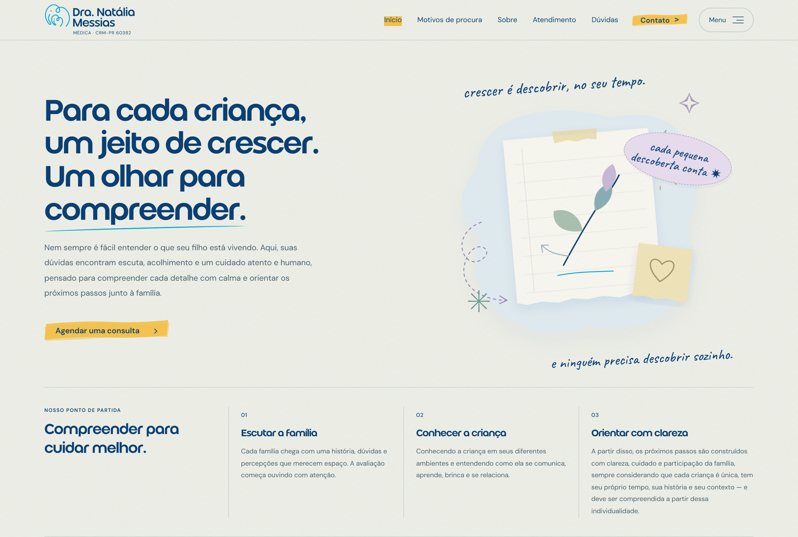
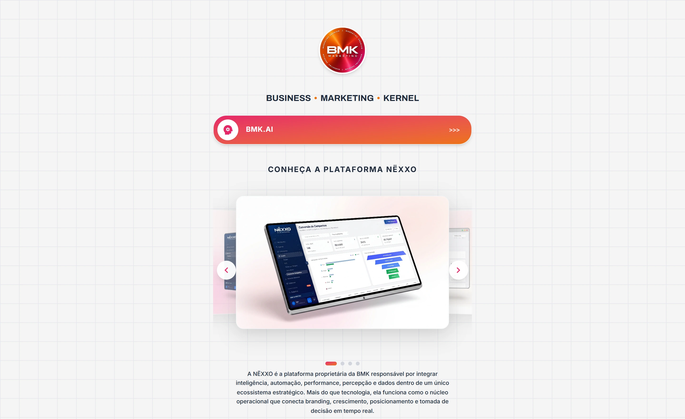

Design & desenvolvimentoUI / UX
Design, interfaces & desenvolvimento
Produtos, sites e interfaces.Cada trabalho, um ponto de partida.
Produto digital
Uma publicação. O destino certo para cada unidade.
Um lugar para dar forma à rotina.

Landing page
Conversa vira conexão.

Site e interface
Cuidado traduzido em linguagem visual.
Nem tudo que aperta o peito tem nome ainda.
Uma experiência que começa antes da mesa.
Link in bio / Chácara Flora
Da vontade de pizza ao próximo toque.

Link in bio
Uma entrada para todo o ecossistema BMK.
Uma rede conhecida. Um atendimento local.